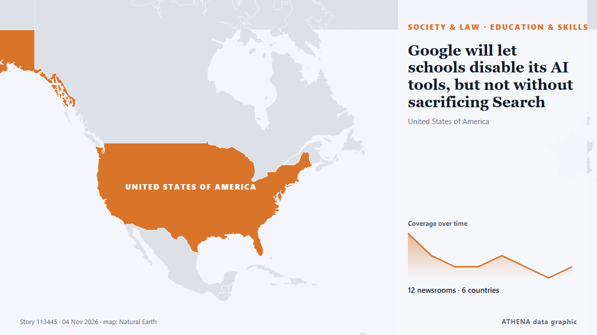

التعليم والمهارات
| 22 أكتوبر | 0 |
|---|---|
| 23 أكتوبر | 0 |
| 24 أكتوبر | 0 |
| 25 أكتوبر | 0 |
| 26 أكتوبر | 1 |
| 27 أكتوبر | 0 |
| 28 أكتوبر | 0 |
| 29 أكتوبر | 0 |
| 30 أكتوبر | 2 |
| 31 أكتوبر | 5 |
| 1 نوفمبر | 5 |
| 2 نوفمبر | 8 |
| 3 نوفمبر | 2 |
| 4 نوفمبر | 0 |
تُعرض العناوين بالإنجليزية كما نُشرت.

Google will let schools disable its AI tools, but not without sacrificing Search
Schools choosing to restrict AI altogether will no longer be able to access Google Search, as AI features are now integrated into the search engine. من TechCrunch
Sheikh Mohamed marks UAE Flag Day at Qasr Al Hosn in Abu Dhabi
Abu Dhabi: President His Highness Sheikh Mohamed bin Zayed Al Nahyan raised the UAE flag at Qasr Al Hosn in Abu Dhabi on Tuesday to mark Flag Day, accompanied by 55 distinguished individuals from… من Gulf News
French school blockades to restart from Monday: Student group
France's protest movement against soaring prices emerged from weeks of demonstrations by high school students protesting deteriorating learning conditions and inequality. من CNA (Channel NewsAsia)
At Least 31 Killed in Russian Bomb Attack in Zaporizhzhia
Ukrainian officials said Russia bombed a school being used as an aid distribution point in a village in the village of Komyshuvakha. من The Moscow Times
French school protests resume on smaller scale as students return from break
Police present, though not in full anti-riot gear as youth try to blockade high schools in Paris, Marseille, Rennes. من Express Tribune
Mount Kinabalu training centre faces calls to halt work over indigenous, environmental concerns
KOTA KINABALU, Nov 3 — The ongoing construction of a high-altitude training centre on Mount Kinabalu has come unde... من Malay Mail
Terrifying to scratch surface of violence against women, says Camilla
The Queen gave a speech to delegates at the Commonwealth Heads of Government Meeting. من Evening Standard (London)
Repton announces first Bahrain school with new campus targeting Saudi families
Repton announces its first school in Bahrain, with a 32,000sqm campus for pupils aged three to 18 and access for families from Saudi Arabia's Eastern Province. من Arabian Business
Otti explains Abia’s preference for electric buses over CNG
He said that both petrol and CNG vehicles operate on internal combustion engines, while EVs require a different propulsion system. من Vanguard
Amitabh Bachchan greets fans from behind bulletproof glass amid security concerns, Abhishek keeps watch
Legendary Bollywood actor Amitabh Bachchan made his customary Sunday appearance outside his Mumbai home, Jalsa, but this time he greeted fans from behind a bulletproof shield as security was… من Gulf News
New York City Mayor Mamdani secures Trump’s approval for visa for mother of slain Ghanaian teenager in Bronx
The mother of 15-year-old Ghanaian student Javits Frimpong, who was fatally shot while walking to school in New York, will be granted a visa to travel to the United States following an intervention… من MyJoyOnline
School transport fares to remain unchanged despite diesel price hike
Associated Press Of Pakistan School van owners hike fares after petrol price surge; parents cry foul ISLAMABAD, Nov 01 (APP):Following the recent surge in petrol prices linked to Middle East… من APP (Associated Press of Pakistan)
PDP members back Uba Sani over projects in Kaduna
Some stalwarts of the Peoples Democratic Party (PDP) in Soba Local Government Area of Kaduna State have declared support for Governor Uba Sani ahead of the 2027 governorship election, citing projects… من Daily Trust
Prashant Chaudhary wins Rohini Nayyar Prize
Dehradun technology educator, Prashant Chaudhary began teaching technology to students from his village right after graduating from IIT. من The Hindu
Case Against School After Boy, 8, Assaults 6-Year-Old Girl In Haryana
Preliminary investigation has pointed to negligence on the part of the school management. من NDTV
B.C.’s adoption of permanent daylight time could cause calendar chaos Sunday
Organizations that rely on scheduling software warn staff, patients of potential issues as other regions turn back the clock. من The Globe and Mail
Raymond Omollo warns parents, teachers against KCSE exam cheating as written papers begin
Interior Principal Secretary Raymond Omollo has warned parents and teachers against paying fraudsters promising to leak or steal Kenya Certificate of Secondary Education (KCSE) examination papers as… من People Daily
Daylight saving time is spooky this year: What to know about the 2026 clock change
It’s that time of year again—when the sun sets earlier, the days get shorter, and the nights get colder as we say goodbye to daylight saving time (DST). من Fast Company